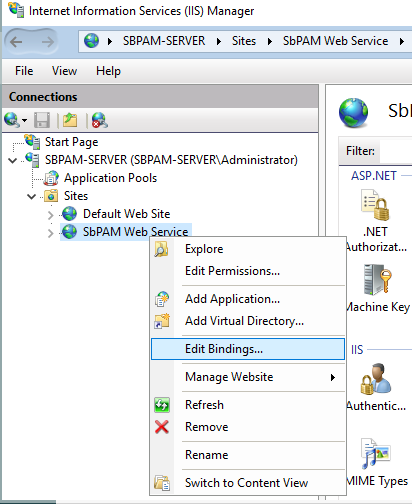
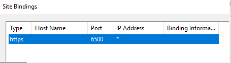
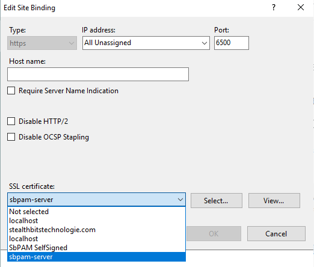

Summary
How to Setup High Availability (HA) for SbPAM (PostgreSQL 12)
Before configuring HA for SbPAM (PostgreSQL), it's important to understand how HA is intended to work. Once HA has been configured, there's two SbPAM servers, each with their own database. These servers take on the roles of Primary and Secondary.
At any time, the only writeable database is the Primary. In the event that the Primary server experiences an interruption, the Secondary database will be up-to-date as of the time of that interruption. The Secondary server can then be promoted to be the Primary via the failover.ps1 script.
Now that the Secondary server has become the Primary, the old Primary needs to be configured as the new Secondary, which can be done using the same steps outlined later in this KB for Secondary server configuration.
Once the new Primary/Secondary relationship has been established, the same steps could be followed to set the original Primary (now Secondary) back to the Primary, and the original Secondary (now Primary) back to the Secondary.
Important: These steps are only for SbPAM installations running PostgreSQL 12. If running PostgreSQL 10 and upgrading to 12, please contact the SbPAM Product Team.
Steps to Install SbPAM with High Availability (HA)
Important: If SbPAM is already installed with a single PostgreSQL database, and you intend to add a second server for PostgreSQL High Availability (GA), skip Step #1.
Before starting, please note the IPv4 address of both the Primary and Secondary servers. You'll also need the PostgreSQL 12 port for the Primary server which can be obtained by running the following in PowerShell on the Primary server (assuming SbPAM is already installed):
(Get-ItemProperty HKLM:\SOFTWARE\PostgreSQL\Services\postgresql-x64-12).Port
The output will either be "5432" or "5433".
1. Install SbPAM on Primary server - Configure the Admin account and install the license.
2. Install SbPAM on Secondary (Standby) server - Configure the Admin account and install the license.
NOTE: This Admin account will be removed and the Admin from the Primary will be used going forward after High Availability has been successfully configured.
3. Obtain and copy the SbPAM High Availability scripts to the Primary and Secondary servers.
4. On the Primary server, launch an elevated PowerShell session.
a. Browse to the folder where the High Availability scripts are located. Ensure that the SbPAM High Availability scripts are unblocked, either via the right-click menu or via PowerShell (below):
PS >> cd .\SbPAM\ PS >> Get-ChildItem Directory: C:\Users\<username>\Desktop\SbPAM Mode LastWriteTime Length Name ---- ------------- ------ ---- -a--- 4/26/2021 1:41 PM 4159 failover.ps1 -a--- 4/26/2021 1:41 PM 20994 pg_replication.psm1 -a--- 4/26/2021 1:41 PM 656 Set-AppSettingsUser.ps1 -a--- 4/26/2021 1:41 PM 5531 setup_pg_replication_primary.ps1 -a--- 4/26/2021 1:41 PM 5734 setup_pg_replication_standby.ps1 PS >> Get-Item * | Unblock-File
b. Run the setup_pg_replication_primary.ps1 script. You can do this in PowerShell with
PS >> .\setup_pg_replication_primary.ps1
You will be required to enter the IPv4 addresses of the Primary and Secondary servers.
5. On the Secondary server, launch an elevated PowerShell session.
a. Browse to the folder where the High Availability scripts are located. Ensure that the SbPAM High Availability scripts are unblocked, either via the right-click menu or via PowerShell (below):
PS >> cd .\SbPAM\ PS >> Get-ChildItem Directory: C:\Users\<username>\Desktop\SbPAM Mode LastWriteTime Length Name ---- ------------- ------ ---- -a--- 4/26/2021 1:41 PM 4159 failover.ps1 -a--- 4/26/2021 1:41 PM 20994 pg_replication.psm1 -a--- 4/26/2021 1:41 PM 656 Set-AppSettingsUser.ps1 -a--- 4/26/2021 1:41 PM 5531 setup_pg_replication_primary.ps1 -a--- 4/26/2021 1:41 PM 5734 setup_pg_replication_standby.ps1 PS >> Get-Item * | Unblock-File
b. Run the setup_pg_replication_standby.ps1 script. You can do this in PowerShell with
PS >> .\setup_pg_replication_standby.ps1
You will be required to enter the IPv4 addresses of the Primary and Secondary servers, as well as the Primary server's PostgreSQL 12 port (obtained prior to Step #1 of this KB).
NOTE: Replication should now be working between the 2 servers.
6. On the Secondary server - Login with the Admin account and credentials from the Primary server to confirm replication has been successful.
7. On the Primary server, you'll need to copy 2 files to the Secondary (in the same location on Secondary server).
<DriveLetter>:\Program Files\Stealthbits\PAM\Web\appsettings.json <DriveLetter>:\ProgramData\STEALTHbits\PAM\Web\jwtsign.pfx
8. On the Secondary server modify the appsettings.json file remove the "Host": "localhost" line and save the file.
9. On the Primary server, launch an elevated PowerShell session.
a. Navigate to the directory with the High Availability scripts, and run the following (replacing "localhost" with the hostname of the Primary server, except in the event a certificate hasn't been installed, in which case use "localhost" due to the included self-signed SbPAM certificate).
PS >> Set-AppSettingsUser.ps1 -Url "https://localhost:6500"
b. Repeat these steps for the Secondary server, using the Secondary server's hostname instead of the Primary server's hostname (Except in the event a certificate hasn't been installed, in which case use "localhost" due to the included self-signed SbPAM certificate).
10. Register Services on the Primary server - Log-in to SbPAM as the Admin user. Click on the Admin in upper-right and click "Settings". Go to the Register Services tab and click on the “Register Services” button.
a. Repeat this step on the Secondary server.
b. If for any reason the Register Services tab cannot be reached, you can try manually restarting the SbPAM Proxy Service via Windows' native Services.msc (restarting this service will automatically restart the other essential SbPAM services).
11. On the Primary machine
a. Login to SbPAM. Go to Configuration – Service Nodes and check on the status on all the services on each of the SbPAM servers.
b. All services should be up and running for both SbPAM servers, indicates the HA configuration was successful.
c. If any services are not running, Register Services again or manually restart the SbPAM Proxy Service via Windows' native Services.msc (restarting this service will automatically restart the other essential SbPAM services).
Steps to Upgrade an SbPAM Installation That's Using High Availability (HA)
1. On the Secondary server, launch an elevated PowerShell session.
a. Browse to the folder where the High Availability scripts are located. Ensure that the SbPAM High Availability scripts are unblocked, either via the right-click menu or via PowerShell (below):
PS >> cd .\SbPAM\ PS >> Get-ChildItem Directory: C:\Users\<username>\Desktop\SbPAM Mode LastWriteTime Length Name ---- ------------- ------ ---- -a--- 4/26/2021 1:41 PM 4159 failover.ps1 -a--- 4/26/2021 1:41 PM 20994 pg_replication.psm1 -a--- 4/26/2021 1:41 PM 656 Set-AppSettingsUser.ps1 -a--- 4/26/2021 1:41 PM 5531 setup_pg_replication_primary.ps1 -a--- 4/26/2021 1:41 PM 5734 setup_pg_replication_standby.ps1 PS >> Get-Item * | Unblock-File
2. On the Secondary server, run the failover PowerShell script: .\failover.ps1
a. When asked for Database server and SbPAM server, enter the IP addresses for the Secondary server.
3. Upgrade SbPAM on the Secondary server.
4. On the Secondary server, log-in to SbPAM. Go to Configuration > Service Nodes and check on the status of all the services.
5. Upgrade SbPAM on the Primary Server
6. On the Secondary server, launch an elevated PowerShell session.
a. Run the PowerShell script
PS >> .\setup_pg_replication_secondary.ps1
7. On the Secondary server, log-in to SbPAM. Go to Configuration > Service Nodes and check on the status of all the services.
a. If any services are not running, Register Services again or manually restart the SbPAM Proxy Service via Windows' native Services.msc (restarting this service will automatically restart the other essential SbPAM services).
Installing a TLS Certificate in an SbPAM High Availability (HA) Environment
Important: You will need to obtain certificates for your primary and secondary host, for HA using a wildcard certificate is preferred. Note the steps are repeated for primary and secondary servers.
After getting the valid certificate for your web host, update the bindings for the website in IIS Manager.
1. On the Primary server, open IIS Manager.
a. Select the SbPAM Web Service Node.
b. Right-click “SbPAM Web Service”.
c. Select “Edit Bindings…”.

d. Double-click "https" or highlight "https" and click "Edit..."

e. Select the SSL certificate for the DNS hostname you are using from the "SSL certificate" dropdown:

f. After making these changes, open an elevated Command Prompt and run the following command to restart IIS services:
iisreset
2. On the Primary server, navigate to the directory with the High Availability scripts, and run the following (replacing "localhost" with the hostname of the Primary server used in the certificate):
PS >> Set-AppSettingsUser.ps1 -Url "https://localhost:6500"
3. On the Primary server, verify the services are running properly by navigating to the Configuration > Service Nodes page in the SbPAM Web UI.
4. Repeat these steps to install the certificate on the Secondary server. If you've completed these steps for both the Primary and Secondary servers, then you are finished.
Attachment: SbPAM_HA.zip